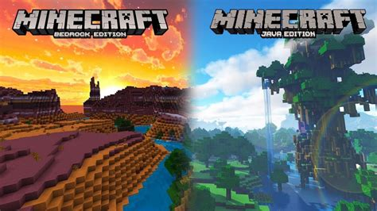

Java vs Bedrock, ¿que minecraft es mejor?

He perdido la cuenta de la cantidad de ocasiones en las que he escuchado esta pregunta, ¿Minecraft Java o Bedrock? ¿Qué diferencias hay? ¿Cuál es mejor? ¿Cuál debería comprar? Y es normal dudar, ya que la comunidad de jugadores queda dividida con un telón de acero entre ambas versiones. Y según la elección que hagas, tendrás acceso a una u otras posibilidades y podrás jugar con unas u otras personas. La mala noticia es que no lo puedes tener todo, y la otra mala noticia es que en muchas plataformas (en realidad en todas menos en Windows) no podrás elegir. fracaso.
Así, como puedes ver, podemos decir que Minecraft Java es la versión para PC, independientemente de su sistema operativo, mientras que Bedrock es la versión para consolas y dispositivos, y que la única excepción a esta regla es la última versión del sistema operativo de Microsoft. Y por lo tanto llegamos a la primera conclusión importante: solo podrás elegir entre Minecraft Java o Bedrock si vas a jugar en Windows 10. En caso contrario, solo podrás elegir la que te corresponda. Míralo por el lado bueno, te ahorrarás la disyuntiva de tener que elegir.
Es posible que, en este punto, te estés preguntando si tienes instalado Minecraft Java o Bedrock en tu incombustible PS3 o Xbox 360, ¿no? Vale, pues ni una ni otra. En realidad se trata de una tercera versión, ya descontinuada, de la que se responsabilizada otro desarrollador, y que dejó de recibir soporte hace ya tiempo. Es más, si tienes Minecraft en una PS4 y no lo juegas desde el año pasado, también tienes la versión legacy, puesto que Bedrock llegó a PS4 el 10 de diciembre de 2019
or otra parte, posible que te estés preguntando por otras versiones de las que quizá hayas oído hablar: Minecraft PE (Pocket Edition), Minecraft Windows 10… Si hablamos del pasado sí que se refieren a desarrollos distintos, pero en la actualidad, cuando alguien mencione cualquiera de ellas, en realidad se estará refiriendo a Bedrock, que es la versión que unifica todas las anteriores (salvo Java, claro). A día de hoy solo puedes comprar Minecraft Java o Bedrock, el resto son cosa del pasado.